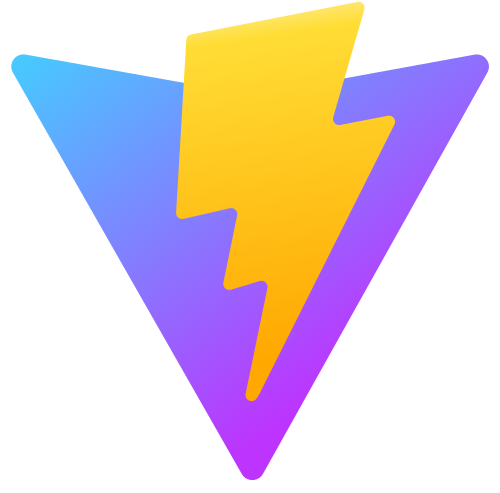

Every source in one feed, tagged by topic and mood.

Sentiment, top topics and trends, at a glance.

Coverage mapped across all 24 governorates.

Search finds articles by meaning, not just keywords.

The assistant answers from real articles, and cites its sources.

Simple to run: one table, one command, all open-source.
Data model
A single
articles table: enrichment stored as columns, plus a 384-dim vector for search.
idurlsourcetitlesentimenttopic_labelregionsummaryembedding vector(384)cosine <=>
Deployment
One
docker-compose up starts five services on one network:
news_postgres :5432news_api :8000news_frontend :5173news_prefect :4200news_mlflow :5000
Stack · open-source throughout
 Python
Python PostgreSQL + pgvector
PostgreSQL + pgvector
 Prefect
Prefect MLflow
MLflow
 React
React
Vite Docker
Docker